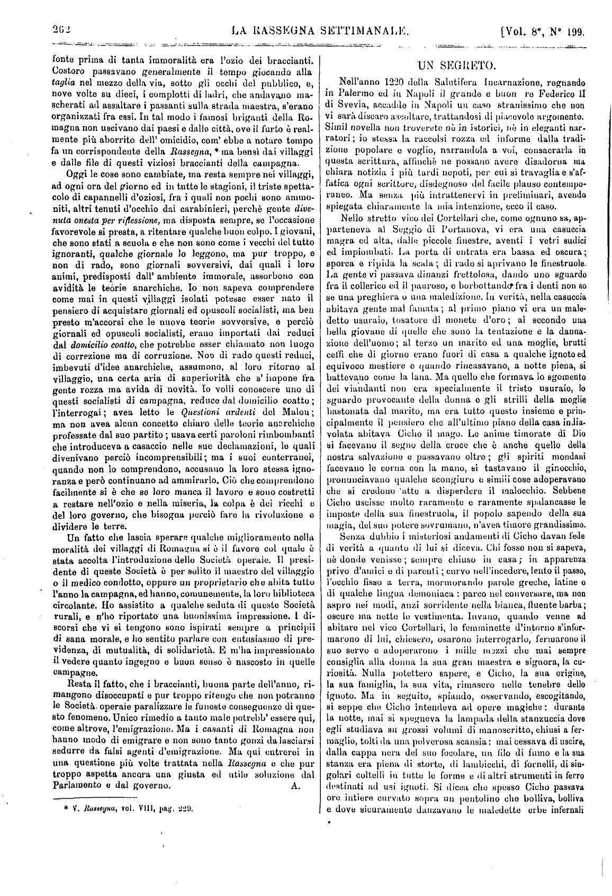
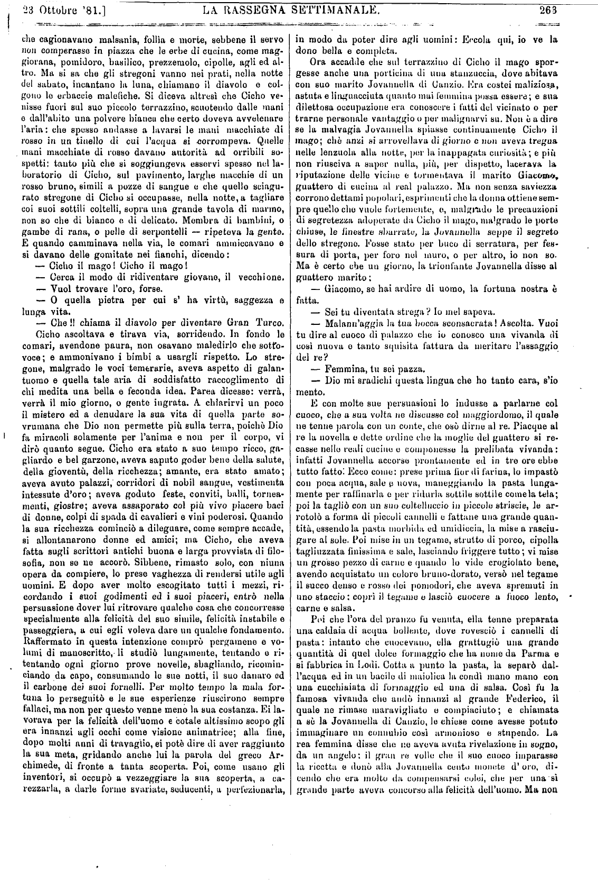
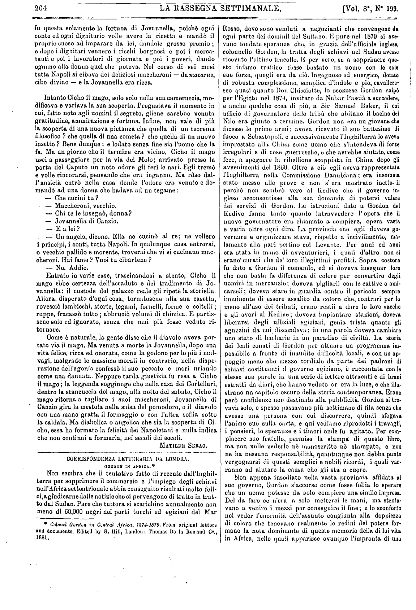
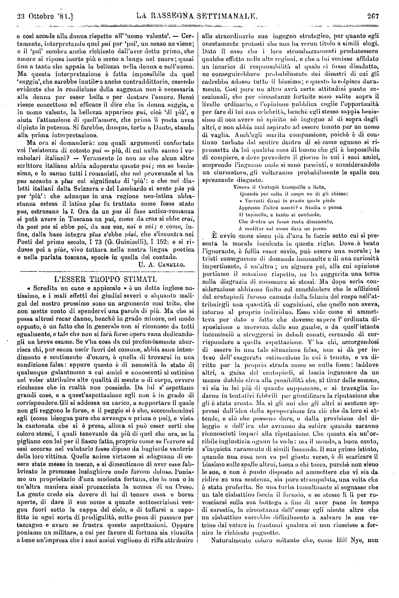
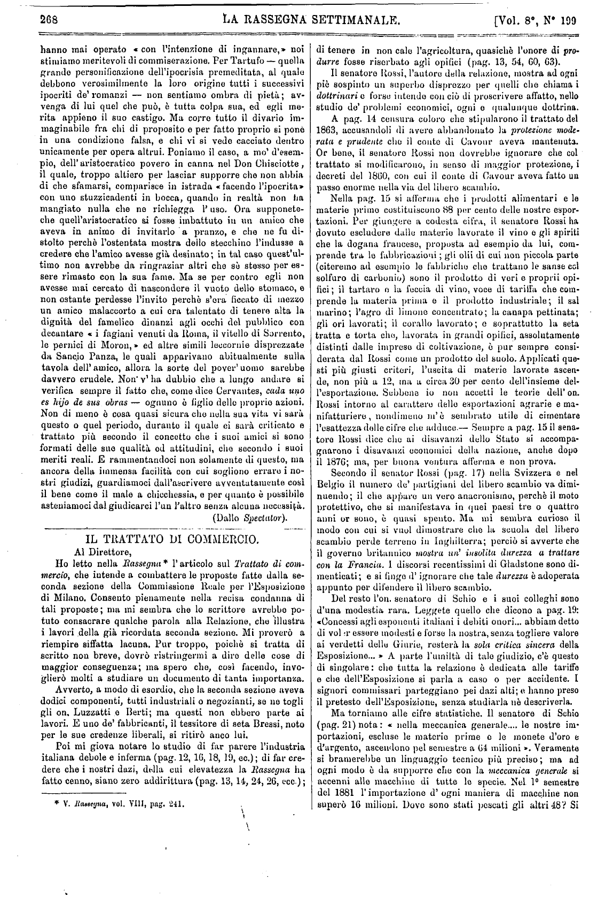
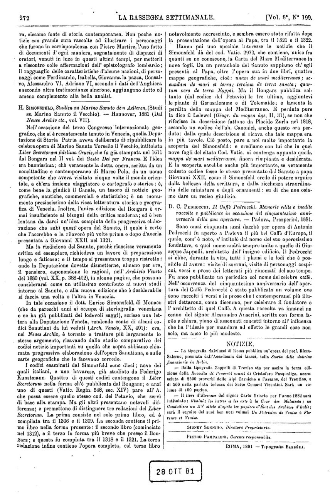

Testata
La Rassegna Settimanale
Di politica, scienza, lettere ed arti
Fondatori
Sidney Sonnino
Leopoldo Franchetti
Editore
Università di Pisa
Pisa, 56127 - Italia
Esemplare
| Conservato a | Firenze — Biblioteca Nazionale Centrale |
| Segnatura | RS-1881 |
| Volume | Vol. 8° |
| Numero | N° 199 |
| Data | 23 Ottobre 1881 |
| Supporto | Carta stampata |
| Layout | |
| Tipo | Giornale |
Storia
6 Gennaio 1878
Firenze
La rivista viene fondata a Firenze da Sidney Sonnino e Leopoldo Franchetti, con l'obiettivo di importare in Italia il modello dei periodici d'opinione britannici.
3 Novembre 1878
Roma
Con il fascicolo n. 44 del primo anno, la direzione e l'amministrazione della rivista vengono trasferite definitivamente a Roma, in via delle Botteghe Oscure n. 32.
29 Gennaio 1882
La pubblicazione in formato settimanale termina con il n. 213 (Vol. IX). Dal 1° febbraio 1882, l'iniziativa editoriale prosegue con la fusione nel quotidiano "La Rassegna".
Di politica, scienze, lettere ed arti.
Vol. 8°, Roma, 23 Ottobre 1881, N° 199
Facsimile



Nell’anno 1220 della Salutifera Incarnazione, regnando in Palermo ed in Napoli il grande e buon re Federico II di Svevia, accadde in Napoli un caso stranissimo che non vi sarà discaro ascoltare, trattandosi di piacevole argomento. Simil novella non troverete nè in istorici, nè in eleganti nar- ratori ; io stessa la raccolsi rozza ed informe dalla tradi- zione popolare e voglio, narrandola a voi, consacrarla in questa scrittura, affinchè ne possano avere disadorna ma chiara notizia i più tardi nepoti, per cui si travaglia e s'af- fatica ogni scrittore, disdegnoso del facile plauso contempo- raneo. Ma senza più intrattenervi in preliminari, avendo spiegata chiaramente la mia intenzione, ecco il caso.
Nello stretto vico dei Cortellari che, come ognuno sa, ap- parteneva al Seggio di Portanova, vi era una casuccia magra ed alta, dalle piccole finestre, aventi i vetri sudici ed impiombati. La porta di entrata era bassa ed oscura; sporca e ripida la scala; di rado si aprivano le finestruole. La gente vi passava dinanzi frettolosa, dando uno sguardo fra il collerico ed il pauroso, e borbottando fra i denti non so se una preghiera o una maledizione. In verità, nella casuccia abitava gente mal famata; al primo piano vi era un maledetto usuraio, tosatore di monete d’oro; al secondo unabellagiovane di quelle che sono la tentazione e la danna- zione dell’uomo; al terzo un marito ed una moglie, brutti ceffi che di giorno erano fuori di casa a qualche ignoto ed equivoco mestiere e quando rincasavano, a notte piena, si battevano come la lana. Ma quello che formava lo sgomento dei viandanti non era specialmente il tristo usuraio, lo sguardoprovocante della donna o gli strilli della moglie bastonata dal marito, ma era tutto questo insieme e prin- cipalmente il pensiero che all’ultimo piano della casa india- volata abitava Cicho il mago. Le anime timorate di Dio si facevano il segno della croce che è anche quello della nostra salvazione e passavano oltre; gli spiriti mondani facevano le corna con la mano, si tastavano il ginocchio, pronunciavano qualche scongiuro e simili cose adoperavano che si credono atte a disperdere il malocchio. Sebbene Cicho uscisse molto raramente e raramente spalancasse le imposte della sua finestruola, il popolo sapendo della sua magia, del suo potere sovrumano, n’avea timore grandissimo.
Senza dubbio i misteriosi andamenti di Cicho davan fede di verità a quanto di lui si diceva. Chi fosse non si sapeva, nè donde venisse; sempre chiuso in casa; in apparenza privo d’amici o di parenti ; curvo nell'incedere, lento il passo, l’occhio fisso a terra, mormorando parole greche, latine o di qualche lingua demoniaca : parco nel conversare, ma non aspro nei modi, anzi sorridente nella bianca, fluente barba ; oscure ma nette le vestimenta. Invano, quando venne ad abitare nel vico Cortellari, le femminette d’intorno s’infor- marono di lui, chiesero, osarono interrogarlo, fermarono il suo servo e adoperarono i mille mezzi che mai sempre consiglia alla donna la sua gran maestra e signora, la cu- riosità. Nulla potettero sapere, e Cicho, la sua origine, la sua famiglia, la sua vita, rimasero nelle tenebre dell’ignoto. Ma in seguito, spiando, osservando, escogitando, si seppe che Cicho intendeva ad opere magiche : durante la notte, mai si spegneva la lampada della stanzuccia dove egli studiava su grossi volumi di manoscritto, chiusi a fer- maglio, tolti da una polverosa scansia: mai cessava di uscire dalla cappa nera del suo focolare, un filo di fumo e la sua stanza era piena di storto, di lambicchi, di fornelli, di sin- golari coltelli in tutte le forme e di altri strumenti in ferro destinati ad usi ignoti. Si dicea che spesso Cicho passava ore intiere curvato sopra un pentolino che bolliva, bolliva e dove sicuramente danzavano le maledette infernali erbe
[p. 263] che cagionavano malsania, follia e morte, sebbene il servo non comperasse in piazza che le erbe di cucina, come maggiorana, pomodoro, basilico, prezzemolo, cipolle, agli ed al- tro. Ma si sa che gli stregoni vanno nei prati, nella notte del sabato, incantano la luna, chiamano il diavolo e col- gono le erbaccie malefiche. Si diceva altresì che Cicho ve- nisse fuori sul suo piccolo terrazzino, scuotendo dalle mani e dall’abito una polvere bianca che certo doveva avvelenare l’aria : che spesso andasse a lavarsi le mani macchiate di rosso in un tinello di cui l’acqua si corrompeva. Quelle mani macchiate di rosso davano autorità ad orribili sospetti: tanto piu che si soggiungeva esservi spesso nel la- boratorio di Cicho, sul pavimento, larghe macchie di un rosso bruno, simili a pozze di sangue e che quello stregone si occupasse, nella notte, a tagliare coi suoi sottili coltelli, sopra una grande tavola di marmo, non so che di bianco e di delicato. Membra di bambini, o gambe di rana, o pelle di serpentelli — ripeteva la gente. E quando camminava nella via, le comari ammiccavano e si davano delle gomitate nei fianchi, dicendo:
— Cicho il mago! Cicho il mago! — Cerca il modo di ridiventare giovane, il vecchione. — Vuol trovare l’oro, forse. — O quella pietra per cui s’ ha virtù, saggezza e lunga vita. — Che !! Chiama il diavolo per diventare Gran Turco.
Cicho ascoltava e tirava via, sorridendo. In fondo le comari, avendone paura, non osavano maledirlo che sotto voce; e ammonivano i bimbi a usargli rispetto. Lo stre- gone, malgrado le voci temerarie, aveva aspetto di galan- tuomo e quella tale aria di soddisfatto raccoglimento di chi medita una bella e feconda idea. Parea dicesse: verrà, verrà il mio giorno, o gente ingrata. A chiarirvi un poco il mistero ed a denudare la sua vita di quella parte so- vrumana che Dio non permette più sulla terra, poiché Dio fa miracoli solamente per l’anima e non per il corpo, vi dirò quanto segue, Cicho era stato a suo tempo ricco, ga- gliardo e bel garzone, aveva saputo goder bene della salute, della gioventù, della ricchezza; amante, era stato amato; aveva avuto palazzi, corridori di nobil sangue, vestimenta intessute d’oro; aveva goduto feste, conviti, balli, tornea- menti, giostre; aveva assaporato col più vivo piacere baci di donne, colpi di spada di cavalieri e vini poderosi. Quando la sua ricchezza cominciò a dileguare, come sempre accade, si allontanarono donne ed amici; ma Cicho, che aveva fatta sugli scrittori antichi buona e larga provvista di filo sofìa, non se ne accorò. Sibbene, rimasto solo, con niuna opera da compiere, lo prese vaghezza di rendersi utile agli uomini. E dopo aver molto escogitato tutti i mezzi, ri- cordando i suoi godimenti ed i suoi piaceri, entrò nella persuasione dover lui ritrovare qualche cosa che concorresse specialmente alla felicità del suo simile, felicità instabile e passeggiera, a cui egli voleva dare un qualche fondamento. Raffermato in questa intenzione comprò pergamene e vo- lumi di manoscritto, li studiò lungamente, tentando e ri- tentando ogni giorno prove novelle, sbagliando, ricomin- ciando da capo, consumando le sue notti, il suo danaro ed il carbone dei suoi fornelli. Per molto tempo la mala for- tuna lo perseguitò e le sue esperienze riuscirono sempre fallaci, ma non per questo venne meno la sua costanza. Ei la- vorava per la felicità dell’uomo e cotale altissimo scopo gli era innanzi agli occhi come visione animatrice; alla fine, dopo molti anni di travaglio, ei potè dire di aver raggiunto la sua meta, gridando anche lui la parola del greco Ar- chimede, di fronte a tanta scoperta. Poi, come usano gli inventori, si occupò a vezzeggiare la sua scoperta, a ca- rezzarla, a darle forme svariato, seducenti, a perfezionarla, in modo da poter dire agli uomini : Eccola qui, io ve la dono bella e completa
Ora accadile che sul terrazzino di Cicho il mago spor- gesse anche una porticina di una stanzaccia, dove abitava con suo marito Jovanuella di Canzio. Era costei maliziosa, astuta e linguacciuta quanto mai femmina possa essere; e sua dilettosa occupazione era conoscere i fatti del vicinato o per- trarne personale vantaggio o per malignarvi su. Non è a dire se la malvagia Jovanuella spiasse continuamente Cicho il mago; che anzi si arrovellava di giorno e non aveva tregua nelle lenzuola alla notte, per la inappagata curiosità; e più non riusciva a saper nulla, più, per dispetto, lacerava la riputazione delle vicine e tormentava il marito Giacomo, guattero di cucina al real palazzo. Ma non senza saviezza corrono dettami popolari, esprimenti che la donna ottiene sem- pre quello che vuole fortemente, e, malgrado le precauzioni di segretezza adoperate da Cicho il mago, malgrado le porte chiuse, le finestre sbarrate, la Jovanuella seppe il segreto dello stregone. Fosse stato per buco di serratura, per fes- sura di porta, per foro nel muro, o per altro, io non so. Ma è certo che un giorno, la trionfante Jovannella disse al guattero marito:
— Giacomo, se hai ardire di uomo, la fortuna nostra è fatta. — Sei tu diventata strega? Io mel sapeva. — Malann'aggia la tua bocca sconsacrata! Ascolta. Vuoi tu dire al cuoco di palazzo che io conosco una vivanda di così nuova o tanto squisita fattura da meritare l’assaggio del re? — Femmina, tu sei pazza. — Dio mi sradichi questa lingua che ho tanto cara, s’io mento.
E con molte sue persuasioni lo indusse a parlarne col cuoco, che a sua volta ne discusse col maggiordomo, il quale ne tenne parola con un conte, che osò dirne al re. Piacque al re la novella e dette ordine che la moglie del guattero si re- casse nelle reali cucine e componesse la prelibata vivanda: infatti Jovannella accorse prontamente ed in tre ore ebbe tutto fatto. Ecco come: prese prima fior di farina, lo impastò con poca acqua, sale e uova, maneggiando la pasta lungamente per raffinarla e per ridurla sottile sottile come la tela; poi la tagliò con un suo coltellaccio in piccole striscie, le ar- rotolò a forma di piccoli cannelli e fattane una grande quan- tità, essendo la pasta morbida ed umidiccia, la mise a rasciu- gare al sole. Poi mise in un tegame, strutto di porco, cipolla tagliuzzata finissima e sale, lasciando friggere tutto; vi mise un grosso pezzo di carne e quando lo vide crogiolato bene, avendo acquistato un colore bruno-dorato, versò nel tegame il succo denso e rosso dei pomodori, che aveva spremuti in uno staccio: coprì il tegame e lasciò cuocere a fuoco lento, carne e salsa.
Poi che l’ora del pranzo fu venuta, ella tenne preparata una caldaia di acqua bollente, dove rovesciò i cannelli di pasta: intanto che cuocevano, ella grattugiò una grande quantità di formaggio che ha nume da Parma e si fabbrica in Lodi. Cotta a punto la pasta, la separò dal l’acqua ed in un bacile di maiolica la condì mano mano con una cucchiaiata di formaggio ed una di salsa. Così fu la famosa vivanda che andò innanzi al grande Federico, il quale ne rimase maravigliato e compiaciuto; e chiamata a sé la Jovanuella di Cauzio, le chiese come avesse potuto immaginare un connubio così armonioso e stupendo. La rea femmina disse che ne aveva avuta rivelazione in sogno, da un angelo: il gran re volle che il suo cuoco imparasse la ricetta e donò alla Jovannella cento monete d’oro, di- cendo che era molto a compensarsi colei, che per una sì grande parte aveva concorso alla felicità dell’uomo. Ma non [p. 264] fu questa solamente la fortuna di Jovannella, poiché ogni conte ed ogni dignitario volle avere la ricetta e mandò il proprio cuoco ad imparare da lei, dandole grosso premio; e dopo i dignitari vennero i ricchi borghesi e poi i mercanti e poi i lavoratori di giornata e poi i poveri, dando ognuno alla donna quel che poteva. Nel corso di sei mesi tutta Napoli si cibava dei deliziosi maccheroni — da macarus, cibo divino — e la Jovannella era ricca.
Intanto Cicho il mago, solo solo nella sua caraeruccia, mo- dificava e variava la sua scoporta. Pregustava il momento in cui, fatto noto agli uomini il segreto, gliene sarebbe venuta gratitudine, ammirazione e fortuna. Infine, non vale di più la scoperta di una nuova pietanza che quella di un teorema filosofico? cheChe quella di una cometa? cheChe quella di un nuovo insetto? Bene dunque: e lodato senza fine sia l’uomo che la fa. Ma un giorno che il termine era vicino, Cicho il mago uscì a passeggiare per la via del Molo; arrivato presso la porta del Caputo un noto odore gli ferì le nari. Egli tremò e volle rincorarsi, pensando che era inganno. Ma, róso dall’ansietà, entrò nella casa donde l’odore era venuto e domandò ad una donna che badava ad un tegame:
— Che cucini tu? — Maccheroni, vecchio. — Chi te le insegnò, donna? — Jovannella di Canzio. — E a lei? — Un angelo, dicono. Ella ne cucinò al re; ne vollero i principi, i conti, tutta Napoli. In qualunque casa entrerai, o vecchio pallido e morente, troverai che vi bì cucinano maccheroni. Hai fame? Vuoi tu cibartene? — No. Addio.
Entrato in varie case, trascinandosi a stento, Cicho il mago ebbe certezza dell’accaduto e del tradimento di Jovannella; il custode del palazzo reale gli ripetè la storiella. Allora, disperato d’ogni cosa, tornatosene alla sua casetta, rovesciò lambicchi, storte, tegami, fornelli, forme e coltelli; ruppe, fracassò tutto; abbruciò volumi di chimica. E partis- sene solo ed ignorato, senza che mai più fosse veduto ri- tornare.
Come è naturale, la gente disse che il diavolo aveva por- tato via il mago. Ma venuta a morte la Jovannella, dopo una vita felice, ricca ed onorata, come la godono per lo più i mal- vagi, malgrado le massime morali in contrario, nella dispe- razione dell’agonia confessò il suo peccato e morì urlando come una dannata. Neppure tarda giustizia fu resa a Cicho il mago; la leggenda soggiunge che nella casa dei Cortellari, dentro la stanzuccia del mago, alla notte del sabato, Cicho il mago ritorna a tagliare i suoi maccheroni, Jovannella di Canzio gira la mestola nella salsa del pomodoro, e il diavolo con una mano gratta il formaggio e con l’altra soffia sotto la caldaia. Ma diabolica o angelica che sia la scoperta di Cicho, essa ha formato la felicità dei Napoletani e nulla indica che non continui a formarla, nei secoli dei secoli.
Matilde Serao
Facsimile


«Scredita un cane e appiccalo » è un detto inglese no- tissimo, e i mali effetti de i giudizi severi e alquanto maligni del nostro prossimo sono un argomento così trito, che non mette conto di spendervi una parola di più. Ma che si possa altresì recar danno, benché in grado minore, nel modo opposto, è un fatto che in generale non si riconosce da tutti egualmente, o tale che non si farà forse opera vana dedicandogli un breve esame. Se v’ha cosa da cui profondamente aborrisca chi, pur senza uscir fuori del comune, abbia sano intendimento e sentimento d’onore, è quella di trovarsi in una condizione falsa : eppure questo è di necessità lo stato di qualunque galantuomo a cui amici e conoscenti si ostinino nel voler attribuire alte qualità di mente o di corpo, ovvero ricchezze che in realtà non possiede. Da lui s’aspettano grandi cose, e a quest’aspettazione egli non è in grado di corrispondere. Gli si addossa un carico, a sopportare il quale non gli reggono le forze, e il peggio si è che, soccombendovi egli (come bisogna pure che avvenga o prima o poi), e vista la cantonata che si è presa, allora si può esser certi che coloro stessi, i quali tenevano da più di quel che era, se la pigliano con lui per il fiasco fatto, proprio come se l’errore ad essi occorso nel valutarlo fosse dipeso da bugiarde vanterie della loro vittima. Quelle anime virtuose si sdegnano di essere state messe in mezzo, e si dimenticano di aver esse fabbricato le promesse lusinghiere onde furono deluse. Poniamo un proprietario d’una modesta fortuna, che in una o in un’altra maniera si sia procacciata la nomea di un Creso. La gente crede sia dovere di lui di tenere casa e borsa aperte, di dare il suo nome a quante sottoscrizioni vengon fuori sotto la cappa del cielo, e di tuffarsi a capo fitto in ogni sorta di prodigalità, sotto pena di passare per taccagno e avaro se frustra queste aspettazioni. Oppure poniamo un militare, a cui per favore di fortuna sia riuscita a bene un’impresa che i suoi amici vogliono di riffa attribuire [p. 267] allo straordinario suo ingegno strategico, per quanto egli onestamente protesti che non ha verun titolo a simili elogi. Dato il caso che i loro strombazzamenti producessero qualche effetto nelle alte regioni, e che a lui venisse affidato un incarico di responsabilità al quale vi fosse disadatto, ne conseguirebbero probabilmente dei disastri di cui gli cadrebbe addosso tutto il biasimo; e questo lo colpisce dura mente. Così pure un altro avrà certe attitudini punto ec cezionali, che per circostanze fortuite sono salite sopra il livello ordinario, e l’opinione pubblica coglie l’opportunità per faro di lui una celebrità, benché egli stesso sappia benissimo di non avere nè spirito nè ingegno al di sopra degli altri, e non abbia mai aspirato ad essere tenuto per un uomo di vaglia. Anch’egli merita compassione, poiché è di con tinuo turbato dal sentire dentro di sé come ognuno si ri prometta da lui qualche cosa di buono che gli è impossibile di compiere, e deve prevedere il giorno in cui i suoi amici, scoprendo l’inganno onde si sono pasciuti, e considerandolo un ciurmatore, gli volteranno probabilmente le spalle con sprezzante disgusto.
Viveva il Centopiè tranquillo e lieto,
Quando per celia il rospo un dì gli chiese:
«Vorresti dirmi in grazia quale piede
Appresso l’altro muovi?» Studia e pensa
Il tapinello, e tanto si confonde,
Che dentro un fosso resta dissennato,
A meditar sul come darà un passo.
E ovvio come sieno più d’una le faccio sotto cui si pre senta la morale inculcata in queste righe. Dov'è beato l’ignorante, è follia esser savio, può essere una morale; le tristi conseguenze di domande inconsulte e di una curiosità impertinente, è un’altra ; un signore poi, alla cui opinione portiamo il massimo rispetto, ne ha suggerita una terza nella disgrazia di conoscere sé stessi. Ma dopo seria considerazione abbiamo finito col conchiudere che le afflizioni del centopiedi furono causate dalla fiducia del rospo nell’at- tribuirgli una quantità di cognizioni, che quello non aveva, intorno al proprio individuo. Esso vide come si ammet- teva per dato e fatto che dovesse sapere l’ordinata di sposizione e movenza delle sue gambe, e da quell’istante incominciò a struggersi in deboli conati, cercando di cor rispondere a quella aspettazione. V’ ha chi, accorgendosi di essere in una tale situazione falsa, non si dà per inteso dell’ esagerata estimazione in cui è tenuto, e va di ritto per la propria strada come se nulla fosse : laddove altri, a guisa del centopiedi, si lascia ingannare da un mezzo dubbio circa alla possibilità che, al tirar delle somme, vi sia in lui più di quanto supponesse, e si travaglia indarno in tentativi febbrili per giustificare la riputazione che gli è stata creata. Ma sì gli uni che gli altri si sentono op pressi dall’idea della sproporzione fra ciò che da loro si at- tende, e ciò che possono dare, e dalla previsione del di leggio e dell’ira che avranno da subire quando saranno riconosciuti impari alla riputazione. Che questa sia un’orribile ingiustizia ognun lo vede; ma il mondo, a buon conto, s’inquieta raramente di simili faccende. Il suo primo istinto, quando una cosa non va pel giusto verso, è di scaricare il biasimo sulle spalle altrui, tocca a chi tocca, purché non sieno le sue, e non è punto disposto ad ammettere che vi sia da ridire su una sentenza, sia pure strampalata, una volta che è stata proferita. Se una turba tumultuante si sognasse che un tale ciabattino faccia il fornaio, e se stesse lì lì per ro- vesciarsi sulla sua bottega a fine di aver pane in tempo di carestia, la circostanza dell'esser egli niente altro che un ciabattino varrebbe difficilmente a salvare le sue ve- trine dal volare in frantumi qualora ei non riuscisse a for- nire le richieste pagnotte.
Naturalmente coloro soltanto che, come Bill Nye, non [p. 268] ...hanno mai operato « con l’intenzione di ingannare,» noi stimiamo meritevoli di commiserazione. Per Tartufo — quella grande personificazione dell’ipocrisia premeditata, al quale debbono verosimilmente la loro origine tutti i successivi ipocriti de’ romanzi — non sentiamo ombra di pietà; av- venga di lui quel che può, è tutta colpa sua, ed egli me- rita appieno il suo castigo. Ma corre tutto il divario im- maginabile fra chi di proposito e per fatto proprio si pone in una condizione falsa, e chi vi si vede cacciato dentro unicamente per opera altrui. Poniamo il caso, a mo’ d’esem- pio, dell’aristocratico povero in canna nel Don Chisciotte, il quale, troppo altiero per lasciar supporre che non abbia di che sfamarsi, comparisce in istrada « facendo l’ipocrita » con uno stuzzicadenti in bocca, quando in realtà non ha mangiato nulla che ne richiegga l’uso. Ora supponete che quell’aristocratico si fosse imbattuto in un amico che aveva in animo di invitarlo a pranzo, e che ne fu di- stolto perchè l’ostentata mostra dello stecchino l’indusse a credere che l’amico avesse già desinato; in tal caso quest’ul- timo non avrebbe da ringraziar altri che se stesso per es- sere rimasto con la sua fame. Ma se per contro egli non avesse mai cercato di nascondere il vuoto dello stomaco, e non ostante perdesse l’invito perchè s’era ficcato di mezzo un amico malaccorto a cui era talentato di tenere alta la dignità del famelico dinanzi agli occhi del pubblico con decantare « i fagiani venuti da Roma, il vitello di Sorrento, le pernici di Moron, » ed altre simili leccornie disprezzate da Sancio Panza, le quali apparivano abitualmente sulla tavola dell’amico, allora la sorte del pover’uomo sarebbe davvero crudele. Non v’ha dubbio che a lungo andare si verifica sempre il fatto che, come dice Cervantes, cada uno es hijo de sus obras — ognuno è figlio delle proprie azioni. Non di meno è cosa quasi sicura che nella sua vita vi sarà questo o quel periodo, durante il quale ei sarà criticato e trattato più secondo il concetto che i suoi amici si sono formati delle sue qualità od attitudini, che secondo i suoi meriti reali. E rammentandoci non solamente di questo, ma ancora della immensa facilità con cui sogliono errare i nostri giudizi, guardiamoci dall’ascrivere avventatamente così il bene come il male a chicchessia, e per quanto è possibile asteniamoci dal giudicarci l’un l’altro senza alcuna necessità.
(Dallo Spectator).
Facsimile

- La tipografia Salviucci di Roma pubblica un’opera del prof. Ricca- Salorno, premiata dall’Accademia dei Lincei, sulla Storia delle dottrine finanziarie in Italia.
- Dalla tipografia Zoppelli di Treviso sta per uscire la terza edi- zione della Raccolta di Proverbi veneti di Cristoforo Pasqualigo, accre- sciuta di 2500 proverbi delle Alpi Carniche o Fassane, del Trentino, e più di 500 nella parlata tedesca dei Sette Comuni Vicentini. Sarà un vo- lume di 400 pagine.
Facsimile
, Studien zu Marino Sanuto dem Aelteren, (Studi su Marino Sanuto il Vecchio). — Hannover, 1881 (Dal Neues Archiv etc., vol. IIVII).
Nell’ occasione del terzo Congresso internazionale geo- grafico, che si è recentemente tenuto in Venezia, quella Depu- tazione di Storia Patria aveva deliberato di ripubblicare la celebre opera di Marino Sanuto Torsello il Vecchio, intitolata Liber Secretorum fidelium Crucis, che fu già stampata nel 1611 dal Bongars nel II vol. dei Gesta Dei per Francos. E l’idea era buonissima; che veramente la detta opera, scritta da un concittadino e contemporaneo di Marco Polo, da un uomo competente che aveva visitato cinque volte il mondo orien- tale, e ch’era insieme viaggiatore e cartografo e storico :è, come bene la giudicò il Canale, un tesoro di notizie geo- grafiche, nautiche, commerciali e statistiche; è un monu- mento preziosissimo della ricca letteratura storica e geogra- fica di Venezia. Inoltre, l’unica edizione del Bongars è or- mai insufficiente ai bisogni della critica moderna; ed è ben lontana da darci un’idea compiuta della progressiva elabo- razione che subì quest’ opera del Sanuto, il quale è certo che l’accrebbe e la rilavorò più volte prima o dopo d’averla presentata a Giovanni XXII nel 1321.
Ma la riedizione del Sanuto, perchè riuscisse veramente critica ed esemplare, richiedeva un lavoro di preparazione lungo e faticoso : e il tempo si presentava troppo ristretto: onde la Deputazione dovette dismetterne, almeno per ora, il pensiero, esponendone le ragioni, nell’ Archivio Veneto del 1880 (vol. XX, p.388-402), in alcune pagine, che possono considerarsi come un utilissimo contributo ai nuovi studi intorno al Sanuto, e alla nuova edizione che è desiderabile si faccia una volta o l’altra in Venezia.
In tale occasione il dott. Enrico Simonsfeld, di Monaco (che da parecchi anni si occupa di storiografia veneziana e ne ha già pubblicati dei lodevoli saggi), scrisse una let- tera alla Deputazione Veneta, rendendo conto di alcuni co- dici Sanutiani da lui veduti (Arch. Veneto, XX, 401): ora, nel Neues Archiv, è tornato a trattare più largamente lo stesso argomento, ricavando dallo studio comparativo dei codici notizie importanti su quella che sopra abbiamo chia- mata progressiva elaborazione dell’opera Sanutiana, e sulle carte geografiche che le facevano corredo.
I codici esaminati dal Simonsfeld sono dieci ; nove dei quali italiani, e uno bavarese, già studiato da Federigo Kunstmann. Quattro di questi codici contengono il Liber Secretorum nella forma ch’è pubblicata dal Bongars ; e anzi uno di questi (Vatic. Regin. 548, sec. XIV) pare all’A. che possa essere quello stesso cod. del Petavio, che servì di base alla stampa. Ma gli altri presentano notevoli dif- ferenze; e permettono di distinguere tre redazioni del Liber Secretorum. La prima consisto nel solo primo libro, ed è compilata tra il 1306 e il 1309. La seconda contiene il pri- mo libro nella forma presente; il secondo libro (cominciato nel 1312), e il terzo in forma più breve che presso il Bon- gars ; e questa fu compiuta tra il 1318 e il 1321. La terza redazione infine contiene l’opera completa, col terzo libro
[p. 2]notevolmente accresciuto, e sembra essere stata rifatta dopo la presentazione dell’opera al Papa, tra il 1321 e il 1322.
Hanno poi uno speciale interesse le notizie che il Simonsfeld dà del cod. Vatic. 2972, che contiene, unico fra quanti se ne conoscono, !a Carta del Mare Mediterraneo in nove fogli. Da un preambolo del Sanuto sappiamo ch’ egli presentò al Papa, oltre l’opera sua in due libri, quattro mappe geografiche, cioè: unam de mari mediterraneo ; se- cundam de mari et terra; terciam de terra sancta; quar- tam vero de terra Egypti. Ma il Bongars pubblica sol- tanto (dal codice del Petavio) le tre ultime, aggiuntevi le piante di Gerusalemme e di Tolemaide; o lamenta la perdita della mappa del Mediterraneo. E perduta pure la dice il Lelewel (Géogr. du moyen âge, II, 31), se non che riferisce la descrizione fattane da Placido Zurla nel 1818, secondo un codice dell’ab. Canonici, anche questo ora per- duto; dalla quale descrizione si ricava che tale mappa era in più tavole. Ciò posto, pare a noi molto importante la scoperta del Simonsfeld : e crediamo con lui che in quei nove fogli del citato Cod. Vatic, si contenga appunto quella mappa de’ mari mediterraneo, finora rimpianta e desiderata. E la scoperta sarebbe anche più importante, se veramente codesto codice fosse lo stesso presentato dal Sanuto a papa Giovanni XXII, come il Simonsfeld crede di potere arguire dalla bellezza della scrittura, e dalla ricchezza straordina- ria delle miniature e degli ornamenti: su di che non osia- mo dare un reciso giudizio.
D. C. Pedrocchi, Il Caffè Pedrocchi. Memorie edite e inedite raccolte e pubblicate in occasione del cinquantesimo anni- versario della sua apertura. — Padova, Prosperini, 1881.
Sono ormai cinquanta anni dacché per opera di Antonio Pedrocchi fu aperto a Padova il più bel Caffè d’Europa, il quale, com’ è noto, s’intitolò dal nome del suo operosissimo fondatore, e quel nome andrà sempre unito a quello di Giu- seppe Jappelli, architetto dell’insigne edificio. Il Pedrocchi si ebbe, durante la vita, tutti i plausi e le lodi che è pos- sibile di avere: visite di sovrani, visite di personaggi cospi- cui, versi e prose dei letterati più rinomati del suo tempo. Fu anco pubblicato un periodico col nome del celebre caffè.
Nell’ occorrenza del cinquantesimo anniversario dell’aper- tura del Caffè Pedrocchi è stato pubblicato un volume ove sono raccolti i versi e le prose che i contemporanei più illu- stri dettarono, come dicemmo, per celebrare il fondatore e 1’ architetto di quel Caffè. A questa raccolta va innanzi un cenno del signor Alessandro Anserini, scritto con forma fa- cile e chiara, pieno di assennati concetti intorno all’influenza che ha l' ideale per mandare ad ad effetto le grandi cose non solo, ma anco le più modeste.
Formula liturgica cristiana per indicare l'anno a partire dalla nascita di Cristo, equivalente ad "Anno Domini". L'espressione sottolinea il carattere salvifico (salutifera) dell'Incarnazione del Verbo.
Treccani ↗Esclamazione napoletana di disappunto, contrazione di "mal anno aggia" (che tu abbia un anno di mali). Imprecazione lieve tipica del dialetto napoletano.
Forse dal gr. μάκαρ «beato», epiteto che si dà ai morti: in origine si sarebbe indicato con questo nome un cibo che si consumava nei banchetti funebri
Treccani ↗Cicho (il mago)
Protagonista della leggenda di Matilde Serao; inventore segreto dei maccheroni, creduto erroneamente uno stregone dai suoi contemporanei.
↗Alaeddin Kayqubad I
Sultano dei Selgiuchidi di Rum dal 1220 al 1237, spesso identificato nelle cronache occidentali come il Gran Turco del tempo.
↗Archimede
Matematico, fisico e inventore siracusano; citato nel testo per il suo celebre esclamativo "Eureka".
↗Jovanuella Canzio
Personaggio della leggenda "Il segreto di Cicho" di Matilde Serao; moglie del guattero Giacomo e responsabile del furto della ricetta dei maccheroni.
↗Don Chisciotte Don Chisciotte su Treccani
↗Sancho Panza
↗Tartufo Tartufo su Treccani
↗Centopie
Edgar Wilson Nye (Bill Nye)
↗Roma
Italia
Capitale d'Italia. Sede della direzione della Rassegna Settimanale dal fascicolo n. 44 (novembre 1878). Citata nel testo come luogo di provenienza dei fagiani serviti a tavola.
Treccani ↗Firenze
Italia
Città di fondazione della Rassegna Settimanale (1878). Sede della Biblioteca Nazionale Centrale che conserva l'esemplare codificato.
Treccani ↗Firenze
Italia
Vedi voce principale: .
Pisa
Toscana, Italia
Sede dell'Università di Pisa, istituzione promotrice dell'edizione digitale.
Treccani ↗Napoli
Italia
Città protagonista del primo articolo ("Un segreto"): ambientazione della leggenda di Cicho il mago e dell'invenzione dei maccheroni. Regnata nel 1220 da Federico II di Svevia.
Treccani ↗Palermo
Sicilia, Italia
Città del regno di Federico II di Svevia, citata all'inizio del primo articolo insieme a Napoli.
Treccani ↗Parma
Emilia-Romagna, Italia
Citata nel primo articolo come luogo di produzione del formaggio grattugiato sui maccheroni ("formaggio che ha nome da Parma").
Treccani ↗Lodi
Lombardia, Italia
Citata nel primo articolo come luogo di produzione del formaggio ("si fabbrica in Lodi"), riferimento al formaggio lodigiano.
Treccani ↗Sorrento
Campania, Italia
Citata nel secondo articolo come provenienza del vitello servito alla mensa dell'amico dell'aristocratico di Don Chisciotte.
Treccani ↗Svevia
Germania
Regione storica della Germania meridionale, casa della dinastia degli Hohenstaufen. Federico II era detto "di Svevia" per la sua appartenenza a questa casata.
Treccani ↗Morón de la Frontera
Andalusia, Spagna
Città spagnola citata nel secondo articolo come provenienza delle pernici servite a tavola, in un passo tratto o adattato dallo Spectator.
Vico dei Cortellari
Vicolo medievale di Napoli appartenente al Seggio di Portanova, ambientazione principale della leggenda di Cicho il mago nel primo articolo.
Porta del Caputo
Porta cittadina di Napoli nei pressi della quale Cicho sente per la prima volta l'odore dei maccheroni già diffusi in tutta la città.
Via del Molo
Via napoletana sulla quale passeggia Cicho il mago nel momento in cui scopre che il suo segreto è stato divulgato.
Palazzo Reale
Palazzo reale di Napoli, il cui custode conferma a Cicho il diffondersi della ricetta dei maccheroni fino alla corte di Federico II.
Università di Pisa
Pisa
Istituzione accademica promotrice del progetto di edizione digitale per il corso di Codifica di Testi.
↗Casa Editrice Barbéra
Firenze
Casa editrice fiorentina fondata da Gaspero Barbéra nel 1854. Editrice e tipografa della Rassegna Settimanale nella sua fase iniziale a Firenze; si occupava anche della stampa del periodico.
↗Seggio di Portanova
Napoli
Uno dei cinque Seggi (o Sedili) del patriziato napoletano medievale, ovvero le circoscrizioni nobiliari che governavano i rioni della città. Il vico dei Cortellari, ambientazione del primo articolo, apparteneva alla giurisdizione di questo Seggio.
↗